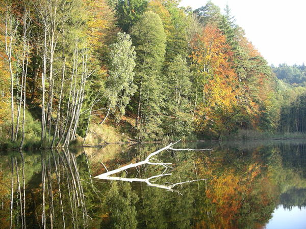

Herbstfarben erzeugen
Herbstfarben können durch Verschiebung der Gelb- und Grünanteile eines Bildes ins Rote erzeugt oder hervorgehoben werden. Hier ein Bild, das im Herbst aufgenommen wurde:|  |
| Abb.
1: Ein Bild im Herbst |
Mit dem Auswahlwerkzeug Farben → Farbton/Sättigung lassen sich gezielt bestimmte Farbanteile im Bild verändern. Im folgenden Beispiel wurden die Gelbanteile (Y wie Yellow) in den Rotbereich verschoben:
 |
| Abb.
2: Werkzeug Farbton/Sättigung |
Hier das veränderte Bild. Mit dieser Methode lassen sich auch völlig unnatürliche Farben erzeugen.
 |
| Abb.
3: Ein Bild im Herbst |
© 2009-2017 Michael Roppel